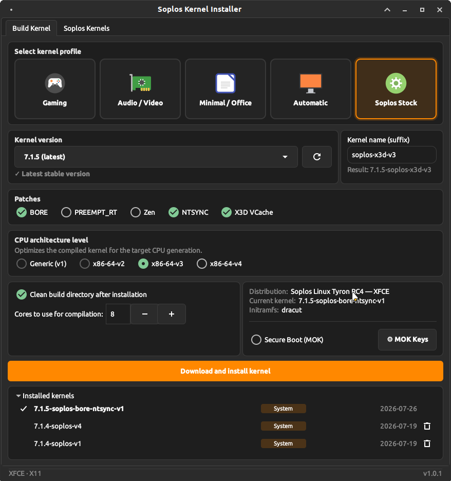
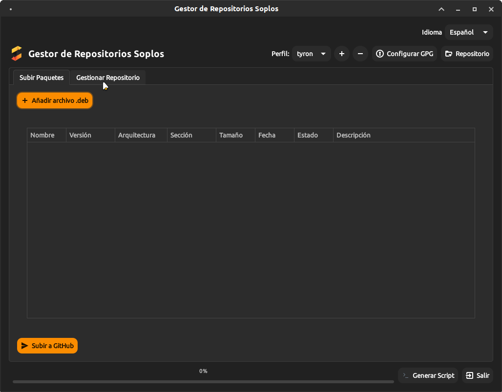
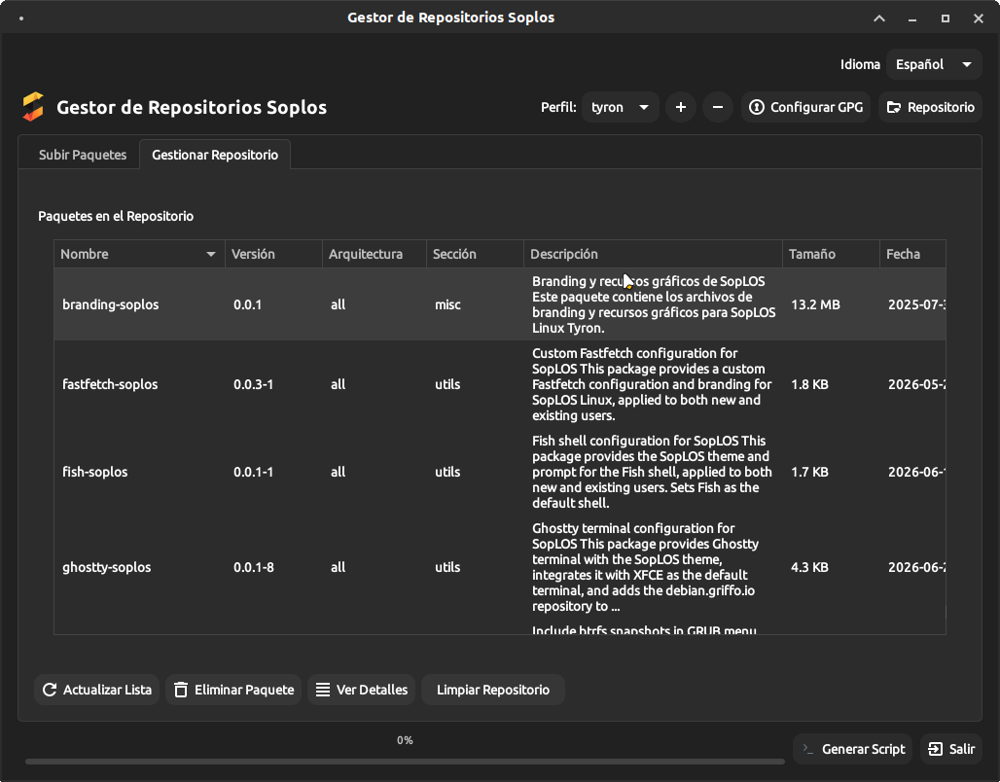
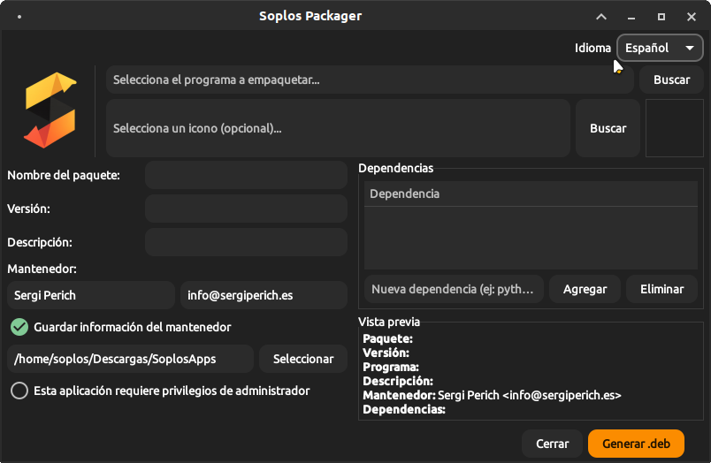
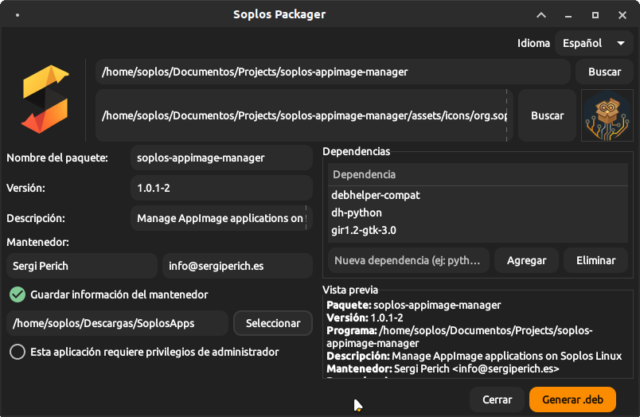
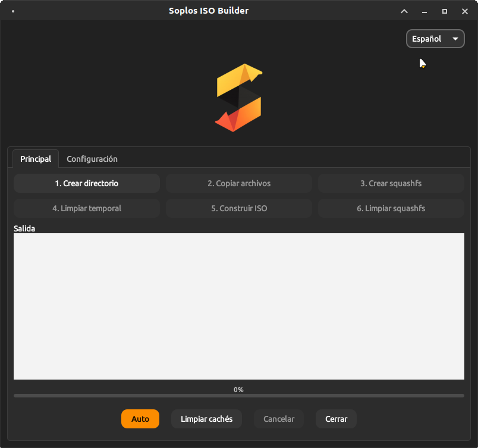
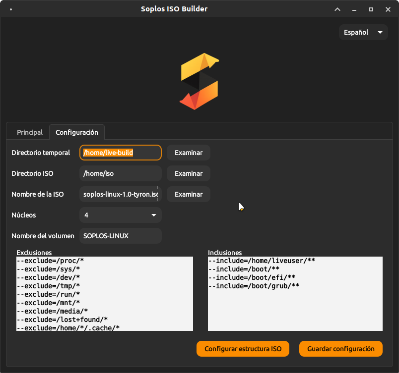

ES
ES FR
FR PT
PT DE
DE IT
IT RO
RO RU
RUOverview
Soplos Linux is built using a set of custom tools developed specifically for the distribution. This page provides an overview of the build infrastructure.
Soplos Tools
The Soplos build infrastructure consists of several specialized tools:
Soplos Kernel Installer
Handles compilation and packaging of the Soplos-optimized Linux kernel. It is the only build tool publicly available — users on Soplos Linux can install it to compile custom kernels.

Soplos Repo Manager
Manages the official Soplos Linux package repositories: signing, metadata updates and mirror synchronization. Internal use only.


Soplos Packager
Simplifies the creation of .deb packages with proper metadata, dependencies and AppStream metainfo. Internal use only.


Soplos ISO Builder
Creates bootable ISO images for all Soplos editions (Boro, Tyron, Tyson). Handles package selection, live environment setup and Calamares integration. Internal use only.

